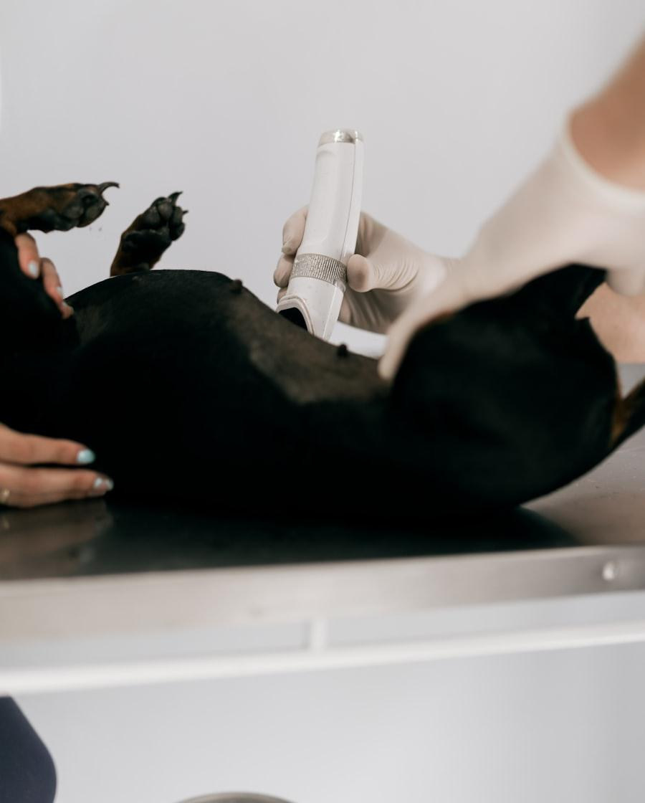

Valoración previa
Exploración, historia clínica y analítica preanestésica para conocer la función hepática y renal, que son las que van a metabolizar y eliminar los fármacos. En pacientes mayores o cardiópatas añadimos las pruebas que hagan falta.
Protocolo individual por paciente y constantes vigiladas minuto a minuto. El dolor se trata antes de que aparezca, no cuando ya está.

Cómo lo hacemos
Exploración, historia clínica y analítica preanestésica para conocer la función hepática y renal, que son las que van a metabolizar y eliminar los fármacos. En pacientes mayores o cardiópatas añadimos las pruebas que hagan falta.
La combinación de fármacos y las dosis se calculan según especie, raza, edad, peso, estado y tipo de intervención. Un galgo, un bulldog y un gato mayor no reciben lo mismo, porque no responden igual.
Durante todo el procedimiento se controlan frecuencia y ritmo cardiaco, saturación de oxígeno, capnografía, tensión arterial y temperatura. De eso se encarga alguien cuya única tarea es esa; el cirujano opera.
El despertar es un momento delicado. El paciente permanece en zona de recuperación con manta térmica y vigilancia hasta que recupera reflejos, temperatura y postura con normalidad.
Un principio básico de la anestesiología moderna: es mucho más eficaz administrar analgesia antes del estímulo doloroso que intentar controlarlo cuando ya está instaurado. Por eso la analgesia empieza en la premedicación y continúa durante y después de la intervención, combinando fármacos con mecanismos distintos para usar dosis menores de cada uno.
Cuando el procedimiento lo permite añadimos anestesia locorregional —bloqueos nerviosos, epidural—, que reduce la cantidad de anestesia general necesaria y mejora mucho el despertar.
Perros y gatos no se quejan como nosotros; tienden a esconder el dolor. Estas señales sí lo indican:
Si ves algo de esto tras un procedimiento, llámanos: la pauta se puede ajustar.
Toda anestesia tiene riesgo, y quien te diga lo contrario no está siendo honesto. En animales sanos y con una monitorización adecuada ese riesgo es bajo, y aumenta con la edad, la obesidad, las cardiopatías y las razas braquicéfalas. Nuestro trabajo es conocerlo antes, reducirlo con lo que está en nuestra mano y explicártelo con claridad para que decidas con la información delante.
Te daremos las pautas por escrito. Con carácter general, la comida se retira unas horas antes, pero el agua se suele mantener hasta poco antes de la cita: un ayuno de agua prolongado deshidrata y complica la anestesia.
En cachorros, animales muy pequeños y diabéticos las pautas cambian. No improvises: síguelas tal como te las demos y, si te has despistado, dínoslo al llegar en vez de callarlo.
Preguntas
Sí, y la hacemos siempre. Buena parte de las alteraciones hepáticas o renales relevantes no dan ningún síntoma visible, y son precisamente las que cambian el protocolo anestésico.
Sí, su anatomía complica la vía aérea y el despertar. Lo tenemos en cuenta en el protocolo, en la monitorización y en la vigilancia posterior, que suele ser más prolongada.
Puedes acompañarle hasta la zona de preanestesia. A partir de ahí se trabaja en un área limpia con acceso restringido, por seguridad del paciente.
Otros servicios
Es una preocupación razonable. Llámanos y te explicamos exactamente qué se le va a hacer y cómo lo vigilamos.